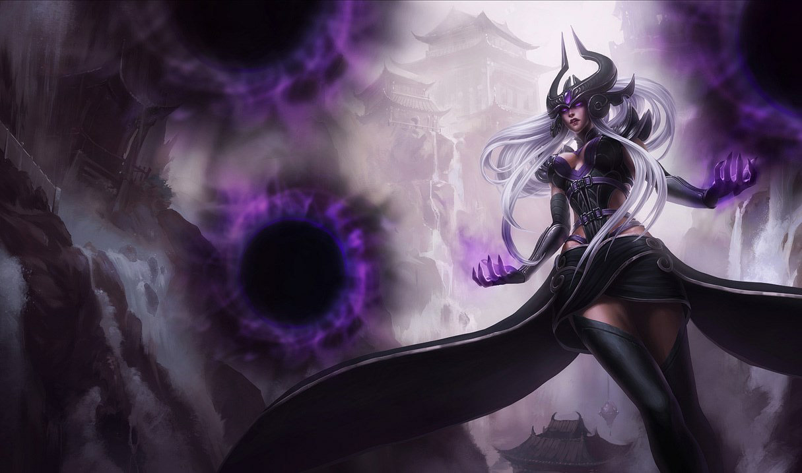

Top Laners
Aatrox

Aatrox era o seu nome. Ele estava na vanguarda de todo conflito nobre. Sua conduta era tão justa e verdadeira
que os outros deuses-guerreiros sempre se colocavam ao seu lado e dez mil mortais de Shurima marcharam sob o seu comando.
K'Sante
Corajoso e desafiador, K'Sante enfrenta feras colossais e Ascendentes cruéis para proteger seu lar, Nazumah — um cobiçado oásis no meio das areias de Shurima.
Entretanto, após uma desavença com seu antigo parceiro, K'Sante entendeu que, para se tornar um guerreiro digno de liderar a cidade, primeiro ele deve aplacar seu desejo obstinado de sucesso.
Somente depois disso ele poderá evitar as armadilhas do próprio orgulho e encontrar a sabedoria necessária para derrotar os monstros ferozes que ameaçam seu povo.
Junglers
Lee Sin

Um mestre das artes marciais ancestrais de Ionia, Lee Sin é um lutador de princípios fortes que canaliza a essência do espírito do dragão para enfrentar qualquer desafio. Apesar de ter perdido a visão há muitos anos, o monge guerreiro dedicou sua vida a proteger sua terra natal contra quem ousasse interferir em seu sagrado equilíbrio. Os inimigos que subestimam seu comportamento meditativo são confrontados por seus punhos ardentes e chutes mirabolantes.
Gragas

Igualmente alegre e imponente, Gragas é um gigante e arruaceiro mestre-cervejeiro em uma busca pessoal pelo mais perfeito caneco de cerveja. Vindo de partes desconhecidas, ele busca por ingredientes raros entre a vastidão intocada de Freljord, testando cada receita enquanto segue seu caminho. Frequente embriagado e extremamente impulsivo, ele é lendário pelas lutas de bar que começa, que quase sempre acabam em festas que duram a noite toda e em muitos danos de propriedade.
Mid Laners
Veigar

Veigar, um mestre entusiasta da feitiçaria das trevas, aderiu a poderes dos quais poucos mortais se aproximam. Um habitante inconformado de Bandópolis, ele desejava ultrapassar as limitações da magia yordle, se voltando, então, para os textos arcanos que permaneceram escondidos por milhares de anos. Agora uma criatura teimosa com uma fascinação sem fim pelos mistérios do universo, Veigar é constantemente subestimado por outros. E mesmo que ele acredite ser verdadeiramente mau, ele possui um senso de ética interior que leva alguns a se perguntarem sobre suas verdadeiras motivações.
Syndra
Syndra é uma temida maga ioniana com um poder incrível ao seu dispor. Quando criança, ela causava pavor nos anciões da aldeia com sua magia imprudente e indomada. Mandada embora para aprender a controlar seus poderes, ela terminou descobrindo que seu suposto mentor estava reprimindo suas habilidades. Transformando seus sentimentos de traição e mágoa em obscuras esferas de energia, Syndra jurou destruir todos que tentarem controlá-la.
Atiradores
Aphelios

Emergindo da sombra do luar com suas armas em mãos, Aphelios abate os inimigos de sua fé em absoluto silêncio, comunicando-se apenas pela destreza de sua mira e pelo disparo de cada arma. Embora viva sob o efeito de um veneno que o emudeceu, ele é guiado por sua irmã Alune, que habita um santuário distante de onde invoca um arsenal de armas de pedra da lua para ajudá-lo. Enquanto a lua brilhar no céu, Aphelios nunca estará sozinho.
Draven

Em Noxus, guerreiros conhecidos como Desafiadores lutam um contra o outro em uma arena onde sangue é derramado e a força é testada, mas nenhum foi tão celebrado como Draven. Antes um soldado, ele descobriu que as multidões apreciavam seu instinto pelo drama e sua habilidade suprema com seus machados giratórios. Viciado no espetáculo de sua própria perfeição impetuosa, Draven jurou derrotar qualquer que seja seu oponente para garantir que seu nome será cantado pelo império para todo o sempre.
Suportes
Alistar

Um poderoso guerreiro com uma temível reputação, Alistar busca vingança por seu clã, morto pelas mãos do império de Noxus. Apesar de ter sido escravizado e forçado a uma vida de gladiador, sua vontade indestrutível o impediu de se tornar uma fera de verdade. Agora, liberto das correntes dos seus antigos mestres, ele luta pelos oprimidos e desfavorecidos, sua fúria uma arma tão poderosa quanto seus chifres, cascos e punhos.
Lulu

A maga yordle Lulu é conhecida por conjurar ilusões de sonhos e criaturas fantasiosas enquanto vaga por Runeterra com seu silfo companheiro, Pix. Lulu transforma a realidade por capricho, distorcendo o que ela vê como restrições desse banal reino físico. Apesar de alguns considerarem sua magia no mínimo anormal, e no máximo perigosa, ela acredita que todos merecem um toque de encanto.